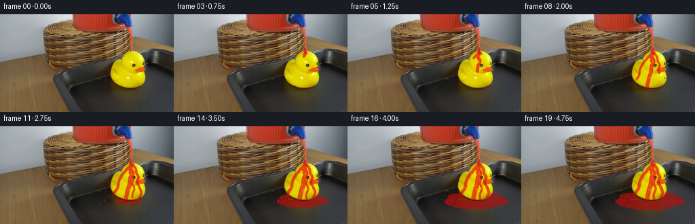
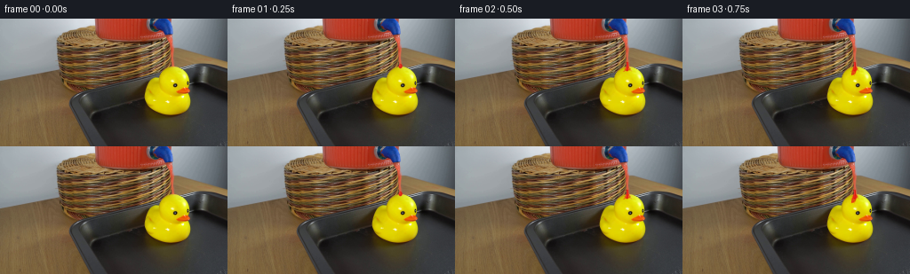

CODING AGENTS AS PIXEL WORLD MODELS
traex/GPT-5.6-Sol · 0085
点击播放 · 原生 RGB 像素
逐轮保存的候选
回放视频、检查图与代码变化。
每份候选均可单独播放。实际图片检查记录在下方工具轨迹中。
候选 01播放与检查图
点击播放 · 原生 RGB 像素


展开代码变化
--- 上一保存版本
+++ 本次保存版本
@@ -0,0 +1,215 @@
+from pathlib import Path
+import math
+import numpy as np
+from PIL import Image, ImageDraw
+from scipy.ndimage import gaussian_filter, binary_dilation
+import artifact_io
+
+CASE_DIR = Path(__file__).resolve().parent
+W, H = 256, 144
+SS = 4
+
+
+def smoothstep(x):
+ x = np.clip(x, 0.0, 1.0)
+ return x*x*(3.0-2.0*x)
+
+
+def catmull_rom(points, samples_per_segment=18):
+ """Smooth polyline through control points."""
+ p = np.asarray(points, np.float32)
+ if len(p) < 3:
+ return p
+ ext = np.vstack([p[0], p, p[-1]])
+ out = []
+ for i in range(1, len(ext)-2):
+ p0,p1,p2,p3 = ext[i-1],ext[i],ext[i+1],ext[i+2]
+ for t in np.linspace(0,1,samples_per_segment,endpoint=False):
+ t2,t3=t*t,t*t*t
+ q=.5*((2*p1)+(-p0+p2)*t+(2*p0-5*p1+4*p2-p3)*t2+(-p0+3*p1-3*p2+p3)*t3)
+ out.append(q)
+ out.append(p[-1])
+ return np.asarray(out)
+
+
+def path_prefix(path, frac):
+ if frac <= 0: return np.empty((0,2), np.float32)
+ if frac >= 1: return path
+ d = np.sqrt(((path[1:]-path[:-1])**2).sum(1))
+ total = d.sum(); target = total*frac
+ cs = np.r_[0,np.cumsum(d)]
+ i = min(np.searchsorted(cs,target,side='right')-1,len(d)-1)
+ part = list(path[:i+1])
+ u = (target-cs[i])/(d[i]+1e-6)
+ part.append(path[i]*(1-u)+path[i+1]*u)
+ return np.asarray(part)
+
+
+def vector_mask(lines=(), ellipses=(), polygons=(), blur=0.0):
+ im = Image.new('L',(W*SS,H*SS),0); d=ImageDraw.Draw(im)
+ for pts,width,fill in lines:
+ xy=[(float(x)*SS,float(y)*SS) for x,y in pts]
+ if len(xy)>=2: d.line(xy,fill=int(fill),width=max(1,int(width*SS)),joint='curve')
+ elif len(xy)==1:
+ x,y=xy[0]; r=width*SS/2; d.ellipse((x-r,y-r,x+r,y+r),fill=int(fill))
+ for box,fill in ellipses:
+ d.ellipse(tuple(float(v)*SS for v in box),fill=int(fill))
+ for pts,fill in polygons:
+ d.polygon([(float(x)*SS,float(y)*SS) for x,y in pts],fill=int(fill))
+ im=im.resize((W,H),Image.Resampling.LANCZOS)
+ a=np.asarray(im,np.float32)/255.0
+ if blur: a=gaussian_filter(a,blur)
+ return np.clip(a,0,1)
+
+
+def over(img, color, alpha):
+ a=np.clip(alpha,0,1)[...,None]
+ return img*(1-a)+np.asarray(color,np.float32)*a
+
+
+base=np.asarray(Image.open(CASE_DIR/'first_frame.png').convert('RGB'),dtype=np.uint8)
+assert base.shape==(H,W,3)
+
+# Hand-fitted silhouette from the visible duck. It is only used as an occluder and
+# to keep the red liquid on the curved rubber surface.
+duck_poly=[(190,53),(199,55),(205,59),(209,65),(210,73),(214,77),(215,82),
+ (212,86),(213,92),(211,100),(207,105),(202,108),(193,110),(181,109),
+ (173,106),(168,102),(165,96),(162,89),(162,82),(164,75),(168,69),
+ (173,64),(181,59),(187,55)]
+duck_mask=vector_mask(polygons=[(duck_poly,255)],blur=.28)
+duck_hard=duck_mask>.38
+
+# A fixed, low-amplitude texture gives the transparent liquid a natural optical
+# irregularity while remaining temporally coherent.
+rng=np.random.default_rng(8501)
+texture=gaussian_filter(rng.normal(size=(H,W)),1.25)
+texture/=max(texture.std(),1e-6)
+Y,X=np.mgrid[:H,:W]
+
+paths=[
+ ([(194,52),(194,57),(192,63),(195,69),(192,77),(191,85),(188,95),(185,108)],1,8,7.0),
+ ([(193,57),(188,62),(184,67),(179,73),(175,81),(173,91),(168,99),(170,107)],3,10,4.8),
+ ([(196,57),(200,63),(201,69),(204,75),(202,82),(205,89),(208,98),(204,108)],4,11,4.5),
+ ([(194,62),(191,69),(197,76),(195,84),(198,92),(195,101),(196,109)],6,12,3.7),
+]
+paths=[(catmull_rom(p),s,e,w) for p,s,e,w in paths]
+
+# Small landed splashes: (appearance frame, x, y, radius)
+specks=[(7,160,104,1.0),(8,218,104,.8),(9,154,109,1.1),(10,224,111,1.0),
+ (11,147,113,.8),(12,229,116,.7),(13,158,118,.65),(15,237,110,.65),
+ (16,139,108,.55),(18,224,122,.55)]
+
+frames=[]
+for f in range(20):
+ if f==0:
+ frames.append(base.copy()); continue
+ img=base.astype(np.float32)
+
+ # Puddle first, so the duck remains in front of it. It begins only after the
+ # first rivulet reaches the tray and expands in perspective.
+ pg=smoothstep((f-6.6)/11.5)
+ if pg>0:
+ cx,cy=189.0,109.5
+ rx=5+45*pg; ry=2.0+12.0*pg
+ pts=[]
+ for k in range(96):
+ th=2*math.pi*k/96
+ # Stable irregular perimeter; amplitude grows with the pool.
+ irr=1+.055*math.sin(5*th+0.7)+.035*math.sin(9*th-1.2)
+ px=cx+rx*irr*math.cos(th)
+ py=cy+ry*(1+.045*math.sin(7*th))*math.sin(th)
+ pts.append((px,py))
+ pool=vector_mask(polygons=[(pts,255)],blur=.45)
+ # Occlude puddle under duck, including an antialiased contact edge.
+ pool*=np.clip(1-gaussian_filter(duck_hard.astype(np.float32),.55),0,1)
+ pool_alpha=pool*(.69+.06*texture)
+ pool_col=np.zeros((H,W,3),np.float32)
+ # Dark red on the black tray, richer near the pool center.
+ pool_col[...,0]=166+12*np.exp(-((Y-cy)/7)**2)
+ pool_col[...,1]=15; pool_col[...,2]=14
+ img=over(img,pool_col,pool_alpha)
+ # Glossy, perspective-shaped reflections in the surface.
+ refl=vector_mask(lines=[([(cx-rx*.55,cy-2.2),(cx-rx*.10,cy-3.0),(cx+rx*.28,cy-2.5)],1.0,210)],blur=.25)
+ refl*=pool*(.15+.22*pg)
+ img=over(img,(255,111,89),refl)
+ edge=np.clip(pool-gaussian_filter(pool,1.0),0,1)
+ img=over(img,(226,36,25),edge*.42)
+
+ # Persistent little splash marks on the tray.
+ spl_ells=[]
+ for appear,x,y,r in specks:
+ if f>=appear:
+ spl_ells.append(((x-r,y-r*.62,x+r,y+r*.62),205))
+ if spl_ells:
+ sm=vector_mask(ellipses=spl_ells,blur=.12)*(1-duck_mask)
+ img=over(img,(190,22,17),sm*.82)
+ hi=np.clip(sm-gaussian_filter(sm,.55),0,1)
+ img=over(img,(248,82,57),hi*.5)
+
+ # Accumulating streams over the rubber duck.
+ coat=np.zeros((H,W),np.float32)
+ fine=np.zeros_like(coat)
+ for idx,(curve,start,end,width) in enumerate(paths):
+ q=smoothstep((f-start)/(end-start))
+ if q<=0: continue
+ part=path_prefix(curve,q)
+ # The deposited ribbon broadens gradually after it forms.
+ age=np.clip((f-start)/12,0,1)
+ w=width*(.60+.40*age)
+ coat=np.maximum(coat,vector_mask(lines=[(part,w,238)],blur=.28))
+ # A narrow, offset highlight tracks the upper-left side of each rivulet.
+ hp=part+np.array([-.7,-.15],np.float32)
+ fine=np.maximum(fine,vector_mask(lines=[(hp,max(.65,w*.16),220)],blur=.12))
+ coat*=duck_mask
+ # Slightly transparent vivid red: underlying duck luminance supplies realistic shading.
+ lum=(.2126*base[...,0]+.7152*base[...,1]+.0722*base[...,2])
+ red=np.empty((H,W,3),np.float32)
+ red[...,0]=np.clip(151+.37*lum+4*texture,150,232)
+ red[...,1]=np.clip(7+.045*lum+1.5*texture,6,22)
+ red[...,2]=np.clip(8+.035*lum,7,18)
+ img=over(img,red,coat*(.79+.035*texture))
+ img=over(img,(255,126,103),fine*coat*.32)
+
+ # Active thread from the dispenser's tap. The tiny lateral oscillation reads as
+ # flowing liquid without moving the camera or apparatus.
+ if f==1:
+ bead=vector_mask(ellipses=[((192.6,51.0,196.5,56.2),255)],blur=.12)
+ img=over(img,(218,26,19),bead*.92)
+ img=over(img,(255,118,86),vector_mask(ellipses=[((193.3,51.5,194.3,53.8),220)])*.55)
+ else:
+ wig=.42*math.sin(f*1.73)
+ stream=vector_mask(lines=[([(194+wig,49),(194-wig*.4,54),(193.7+wig*.2,59.0)],2.35,255)],blur=.10)
+ img=over(img,(221,21,17),stream*.94)
+ shine=vector_mask(lines=[([(193.45+wig,49.5),(193.45-wig*.4,57.8)],.55,235)],blur=.08)
+ img=over(img,(255,137,107),shine*.57)
+
+ # A changing impact crown where the stream meets the duck.
+ if f>=2:
+ pulse=.75+.25*math.sin(f*2.1)**2
+ impact=vector_mask(ellipses=[((190.5,55.0,197.5,58.6),int(220*pulse))],blur=.2)*duck_mask
+ img=over(img,(229,26,18),impact*.64)
+ if f in (2,3,6,10,14,18):
+ rays=[([(193.6,57),(189.5,59.5)],.75,220), ([(195,57),(199,59)],.7,210)]
+ rm=vector_mask(lines=rays,blur=.12)*duck_mask
+ img=over(img,(235,35,23),rm*.72)
+
+ # Intermittent droplets shed from the duck's right edge. Their simple parabolic
+ # trajectories end exactly at the growing puddle.
+ if f>=7:
+ cyc=(f-7)%5
+ if cyc<4:
+ t=cyc/3
+ x=209+7.5*t
+ y=91+7*t+7*t*t
+ dr=.75+1.05*t
+ drop=vector_mask(ellipses=[((x-dr*.68,y-dr,x+dr*.68,y+dr),255)],blur=.08)
+ img=over(img,(208,22,17),drop*.93)
+ gl=vector_mask(ellipses=[((x-dr*.25,y-dr*.66,x+dr*.08,y-dr*.2),230)])
+ img=over(img,(255,126,96),gl*.48)
+
+ frames.append(np.clip(np.rint(img),0,255).astype(np.uint8))
+
+frames=np.stack(frames)
+assert frames.shape==(20,H,W,3) and frames.dtype==np.uint8
+assert np.array_equal(frames[0],base)
+artifact_io.save(frames,CASE_DIR)
可观测工具轨迹
实际执行的命令与返回图片。
命令 1exit 0
/bin/bash -lc "cat GENERATION_RULES.md && printf '\\n---PROMPT---\\n' && cat prompt.txt"
命令 2exit 0
/bin/bash -lc "find . -maxdepth 2 -type f -printf '%p %s bytes\\n' | sort"
命令 3exit 0
/bin/bash -lc "python - <<'PY'
from PIL import Image
import numpy as np
im=np.array(Image.open('first_frame.png').convert('RGB'))
print(im.shape, im.dtype, im.min(axis=(0,1)), im.max(axis=(0,1)), im.mean(axis=(0,1)), im.std(axis=(0,1)))
# sample grid every 16 x 12
for y in range(6,144,12):
print(' '.join('%02x%02x%02x'%tuple(im[y,x]) for x in range(8,256,16)))
PY"命令 4exit 0
/bin/bash -lc "python - <<'PY' import artifact_io, inspect print(inspect.getsource(artifact_io.save)) PY"
命令 5exit 0
/bin/bash -lc "python - <<'PY'
from PIL import Image
import numpy as np
im=np.array(Image.open('first_frame.png').convert('RGB'))
R,G,B=im.transpose(2,0,1)
masks={
'red':(R>120)&(R>G*1.45)&(R>B*1.45),
'brightred':(R>150)&(G<100)&(B<90),
'yellow':(R>130)&(G>100)&(B<70)&(R>B*2)&(G>B*1.7),
'brightyellow':(R>180)&(G>150)&(B<40),
'dark':(R<65)&(G<65)&(B<65),
'gray':(np.max(im,2)-np.min(im,2)<12)&(R>30)&(R<140),
}
for name,m in masks.items():
ys,xs=np.where(m)
print('\\n',name,len(xs), (xs.min(),ys.min(),xs.max(),ys.max()) if len(xs) else None)
for y in range(0,144,4):
xx=np.where(m[y:y+4].any(0))[0]
if len(xx):
# spans
inds=np.split(xx,np.where(np.diff(xx)>1)[0]+1)
spans=[(a[0],a[-1]) for a in inds if len(a)>=2]
if spans: print(f'{y:3d}-{y+3}:',spans)
PY"命令 6exit 0
/bin/bash -lc "python - <<'PY'
from PIL import Image
import numpy as np
im=np.array(Image.open('first_frame.png').convert('RGB'))
# 4x4 median blocks classify HSV-ish manually
def c(v):
r,g,b=v
mx=max(v);mn=min(v)
if mx<45:return 'K'
if mx<75:return 'k'
if mx-mn<10:
return 'W' if mx>180 else ('g' if mx>100 else 'd')
if r>1.5*g and r>1.5*b:return 'R' if r>130 else 'r'
if r>1.6*b and g>1.4*b and r>100:return 'Y' if r>170 else 'y'
if b>1.25*r:return 'B'
if r>1.25*b and g>1.08*b:return 'T' if r>110 else 't'
return '.'
for y in range(0,144,4):
s=''
for x in range(0,256,4):
v=np.median(im[y:y+4,x:x+4],axis=(0,1))
s+=c(v)
print(f'{y:03} {s}')
PY"命令 7exit 0
/bin/bash -lc "python - <<'PY'
from PIL import Image
import numpy as np
im=np.array(Image.open('first_frame.png').convert('RGB'))
def c(v):
r,g,b=map(int,v); mx=max(v); mn=min(v)
if mx<30:return '#'
if mx<50:return 'K'
if mx<75:return 'k'
if mx-mn<8:return 'G' if mx>120 else ('g' if mx>75 else 'd')
if r>145 and r>g*1.55 and r>b*1.65:return 'R'
if r>100 and r>g*1.35 and r>b*1.4:return 'r'
if r>160 and g>135 and b<65:return 'Y'
if r>100 and g>80 and b<75:return 'y'
if b>r*1.25:return 'B'
if r>110 and g>80 and r>b*1.3:return 'T'
if r>g*1.3 and r>b*1.3:return 'b'
return '.'
for y in range(38,114,2):
s=''
for x in range(110,236,2):
v=np.median(im[y:y+2,x:x+2],axis=(0,1))
s+=c(v)
print(f'{y:03} {s}')
print(' '+''.join(str((x//10)%10) for x in range(110,236,2)))
print(' '+''.join(str(x%10//2) for x in range(110,236,2)))
PY"命令 8exit 0
/bin/bash -lc "python - <<'PY'
from PIL import Image
import numpy as np
from scipy.ndimage import label
im=np.array(Image.open('first_frame.png').convert('RGB'));R,G,B=np.moveaxis(im,2,0)
# plausible saturated yellow
m=(R>120)&(G>85)&(R>1.5*B)&(G>1.3*B)&(R/G<2.0)
lab,n=label(m)
for i in range(1,n+1):
y,x=np.where(lab==i); z=len(x)
if z>20: print(z,(x.min(),y.min(),x.max(),y.max()), tuple(np.mean(im[lab==i],0).astype(int)))
# red comps
m=(R>110)&(R>1.35*G)&(R>1.4*B)
lab,n=label(m)
print('RED')
for i in range(1,n+1):
y,x=np.where(lab==i); z=len(x)
if z>10: print(z,(x.min(),y.min(),x.max(),y.max()), tuple(np.mean(im[lab==i],0).astype(int)))
PY"命令 9exit 0
/bin/bash -lc "python - <<'PY'
from PIL import Image
import numpy as np
im=np.array(Image.open('first_frame.png'))
# palette map pixels by nearest semantic reference; print crop x165:225 y25:100 at 2x2 means, with luminance symbol sub info
refs=np.array([[200,200,200],[40,40,40],[150,120,70],[225,205,0],[180,55,30],[215,100,10],[90,100,110],[115,80,45],[20,20,20]])
syms='gktYRO.b#'
for y in range(24,110,2):
s=''
for x in range(160,230,2):
v=im[y:y+2,x:x+2].mean((0,1))
# normalized color distance
j=((refs-v)**2).sum(1).argmin(); s+=syms[j]
print(f'{y:03} {s}')
# key selected lines pixels runs quantized 4 bits
for y in [40,45,50,55,60,65,70,75,80,85,90]:
print('\\ny',y)
for x in range(175,221):
if x%5==0: print(f' {x}:',end='')
r,g,b=im[y,x]
print(f'{r//32:x}{g//32:x}{b//32:x}',end=' ')
print()
PY"命令 10exit 0
/bin/bash -lc "python - <<'PY'
from PIL import Image
import numpy as np
im=np.array(Image.open('first_frame.png'))
for y in range(35,66):
print(y,end=' ')
for x in range(180,206):
r,g,b=im[y,x]
if r>160 and r>g*1.5: s='R'
elif r>170 and g>140 and b<70:s='Y'
elif r<60 and g<60 and b<60:s='#'
elif abs(int(r)-int(g))<12 and abs(int(g)-int(b))<12:s='g'
elif r>110 and g>80 and b<90:s='t'
else:s='.'
print(s,end='')
print()
PY"命令 11exit 0
/bin/bash -lc "python - <<'PY'
from PIL import Image
import numpy as np
im=np.array(Image.open('first_frame.png'))
for y in range(40,61):
print(y, ['%02x%02x%02x'%tuple(im[y,x]) for x in range(186,202)])
PY"命令 12exit 0
/bin/bash -lc "cat > generate.py <<'PY'
from pathlib import Path
import math
import numpy as np
from PIL import Image, ImageDraw
from scipy.ndimage import gaussian_filter, binary_dilation
import artifact_io
CASE_DIR = Path(__file__).resolve().parent
W, H = 256, 144
SS = 4
def smoothstep(x):
x = np.clip(x, 0.0, 1.0)
return x*x*(3.0-2.0*x)
def catmull_rom(points, samples_per_segment=18):
\"\"\"Smooth polyline through control points.\"\"\"
p = np.asarray(points, np.float32)
if len(p) < 3:
return p
ext = np.vstack([p[0], p, p[-1]])
out = []
for i in range(1, len(ext)-2):
p0,p1,p2,p3 = ext[i-1],ext[i],ext[i+1],ext[i+2]
for t in np.linspace(0,1,samples_per_segment,endpoint=False):
t2,t3=t*t,t*t*t
q=.5*((2*p1)+(-p0+p2)*t+(2*p0-5*p1+4*p2-p3)*t2+(-p0+3*p1-3*p2+p3)*t3)
out.append(q)
out.append(p[-1])
return np.asarray(out)
def path_prefix(path, frac):
if frac <= 0: return np.empty((0,2), np.float32)
if frac >= 1: return path
d = np.sqrt(((path[1:]-path[:-1])**2).sum(1))
total = d.sum(); target = total*frac
cs = np.r_[0,np.cumsum(d)]
i = min(np.searchsorted(cs,target,side='right')-1,len(d)-1)
part = list(path[:i+1])
u = (target-cs[i])/(d[i]+1e-6)
part.append(path[i]*(1-u)+path[i+1]*u)
return np.asarray(part)
def vector_mask(lines=(), ellipses=(), polygons=(), blur=0.0):
im = Image.new('L',(W*SS,H*SS),0); d=ImageDraw.Draw(im)
for pts,width,fill in lines:
xy=[(float(x)*SS,float(y)*SS) for x,y in pts]
if len(xy)>=2: d.line(xy,fill=int(fill),width=max(1,int(width*SS)),joint='curve')
elif len(xy)==1:
x,y=xy[0]; r=width*SS/2; d.ellipse((x-r,y-r,x+r,y+r),fill=int(fill))
for box,fill in ellipses:
d.ellipse(tuple(float(v)*SS for v in box),fill=int(fill))
for pts,fill in polygons:
d.polygon([(float(x)*SS,float(y)*SS) for x,y in pts],fill=int(fill))
im=im.resize((W,H),Image.Resampling.LANCZOS)
a=np.asarray(im,np.float32)/255.0
if blur: a=gaussian_filter(a,blur)
return np.clip(a,0,1)
def over(img, color, alpha):
a=np.clip(alpha,0,1)[...,None]
return img*(1-a)+np.asarray(color,np.float32)*a
base=np.asarray(Image.open(CASE_DIR/'first_frame.png').convert('RGB'),dtype=np.uint8)
assert base.shape==(H,W,3)
# Hand-fitted silhouette from the visible duck. It is only used as an occluder and
# to keep the red liquid on the curved rubber surface.
duck_poly=[(190,53),(199,55),(205,59),(209,65),(210,73),(214,77),(215,82),
(212,86),(213,92),(211,100),(207,105),(202,108),(193,110),(181,109),
(173,106),(168,102),(165,96),(162,89),(162,82),(164,75),(168,69),
(173,64),(181,59),(187,55)]
duck_mask=vector_mask(polygons=[(duck_poly,255)],blur=.28)
duck_hard=duck_mask>.38
# A fixed, low-amplitude texture gives the transparent liquid a natural optical
# irregularity while remaining temporally coherent.
rng=np.random.default_rng(8501)
texture=gaussian_filter(rng.normal(size=(H,W)),1.25)
texture/=max(texture.std(),1e-6)
Y,X=np.mgrid[:H,:W]
paths=[
([(194,52),(194,57),(192,63),(195,69),(192,77),(191,85),(188,95),(185,108)],1,8,7.0),
([(193,57),(188,62),(184,67),(179,73),(175,81),(173,91),(168,99),(170,107)],3,10,4.8),
([(196,57),(200,63),(201,69),(204,75),(202,82),(205,89),(208,98),(204,108)],4,11,4.5),
([(194,62),(191,69),(197,76),(195,84),(198,92),(195,101),(196,109)],6,12,3.7),
]
paths=[(catmull_rom(p),s,e,w) for p,s,e,w in paths]
# Small landed splashes: (appearance frame, x, y, radius)
specks=[(7,160,104,1.0),(8,218,104,.8),(9,154,109,1.1),(10,224,111,1.0),
(11,147,113,.8),(12,229,116,.7),(13,158,118,.65),(15,237,110,.65),
(16,139,108,.55),(18,224,122,.55)]
frames=[]
for f in range(20):
if f==0:
frames.append(base.copy()); continue
img=base.astype(np.float32)
# Puddle first, so the duck remains in front of it. It begins only after the
# first rivulet reaches the tray and expands in perspective.
pg=smoothstep((f-6.6)/11.5)
if pg>0:
cx,cy=189.0,109.5
rx=5+45*pg; ry=2.0+12.0*pg
pts=[]
for k in range(96):
th=2*math.pi*k/96
# Stable irregular perimeter; amplitude grows with the pool.
irr=1+.055*math.sin(5*th+0.7)+.035*math.sin(9*th-1.2)
px=cx+rx*irr*math.cos(th)
py=cy+ry*(1+.045*math.sin(7*th))*math.sin(th)
pts.append((px,py))
pool=vector_mask(polygons=[(pts,255)],blur=.45)
# Occlude puddle under duck, including an antialiased contact edge.
pool*=np.clip(1-gaussian_filter(duck_hard.astype(np.float32),.55),0,1)
pool_alpha=pool*(.69+.06*texture)
pool_col=np.zeros((H,W,3),np.float32)
# Dark red on the black tray, richer near the pool center.
pool_col[...,0]=166+12*np.exp(-((Y-cy)/7)**2)
pool_col[...,1]=15; pool_col[...,2]=14
img=over(img,pool_col,pool_alpha)
# Glossy, perspective-shaped reflections in the surface.
refl=vector_mask(lines=[([(cx-rx*.55,cy-2.2),(cx-rx*.10,cy-3.0),(cx+rx*.28,cy-2.5)],1.0,210)],blur=.25)
refl*=pool*(.15+.22*pg)
img=over(img,(255,111,89),refl)
edge=np.clip(pool-gaussian_filter(pool,1.0),0,1)
img=over(img,(226,36,25),edge*.42)
# Persistent little splash marks on the tray.
spl_ells=[]
for appear,x,y,r in specks:
if f>=appear:
spl_ells.append(((x-r,y-r*.62,x+r,y+r*.62),205))
if spl_ells:
sm=vector_mask(ellipses=spl_ells,blur=.12)*(1-duck_mask)
img=over(img,(190,22,17),sm*.82)
hi=np.clip(sm-gaussian_filter(sm,.55),0,1)
img=over(img,(248,82,57),hi*.5)
# Accumulating streams over the rubber duck.
coat=np.zeros((H,W),np.float32)
fine=np.zeros_like(coat)
for idx,(curve,start,end,width) in enumerate(paths):
q=smoothstep((f-start)/(end-start))
if q<=0: continue
part=path_prefix(curve,q)
# The deposited ribbon broadens gradually after it forms.
age=np.clip((f-start)/12,0,1)
w=width*(.60+.40*age)
coat=np.maximum(coat,vector_mask(lines=[(part,w,238)],blur=.28))
# A narrow, offset highlight tracks the upper-left side of each rivulet.
hp=part+np.array([-.7,-.15],np.float32)
fine=np.maximum(fine,vector_mask(lines=[(hp,max(.65,w*.16),220)],blur=.12))
coat*=duck_mask
# Slightly transparent vivid red: underlying duck luminance supplies realistic shading.
lum=(.2126*base[...,0]+.7152*base[...,1]+.0722*base[...,2])
red=np.empty((H,W,3),np.float32)
red[...,0]=np.clip(151+.37*lum+4*texture,150,232)
red[...,1]=np.clip(7+.045*lum+1.5*texture,6,22)
red[...,2]=np.clip(8+.035*lum,7,18)
img=over(img,red,coat*(.79+.035*texture))
img=over(img,(255,126,103),fine*coat*.32)
# Active thread from the dispenser's tap. The tiny lateral oscillation reads as
# flowing liquid without moving the camera or apparatus.
if f==1:
bead=vector_mask(ellipses=[((192.6,51.0,196.5,56.2),255)],blur=.12)
img=over(img,(218,26,19),bead*.92)
img=over(img,(255,118,86),vector_mask(ellipses=[((193.3,51.5,194.3,53.8),220)])*.55)
else:
wig=.42*math.sin(f*1.73)
stream=vector_mask(lines=[([(194+wig,49),(194-wig*.4,54),(193.7+wig*.2,59.0)],2.35,255)],blur=.10)
img=over(img,(221,21,17),stream*.94)
shine=vector_mask(lines=[([(193.45+wig,49.5),(193.45-wig*.4,57.8)],.55,235)],blur=.08)
img=over(img,(255,137,107),shine*.57)
# A changing impact crown where the stream meets the duck.
if f>=2:
pulse=.75+.25*math.sin(f*2.1)**2
impact=vector_mask(ellipses=[((190.5,55.0,197.5,58.6),int(220*pulse))],blur=.2)*duck_mask
img=over(img,(229,26,18),impact*.64)
if f in (2,3,6,10,14,18):
rays=[([(193.6,57),(189.5,59.5)],.75,220), ([(195,57),(199,59)],.7,210)]
rm=vector_mask(lines=rays,blur=.12)*duck_mask
img=over(img,(235,35,23),rm*.72)
# Intermittent droplets shed from the duck's right edge. Their simple parabolic
# trajectories end exactly at the growing puddle.
if f>=7:
cyc=(f-7)%5
if cyc<4:
t=cyc/3
x=209+7.5*t
y=91+7*t+7*t*t
dr=.75+1.05*t
drop=vector_mask(ellipses=[((x-dr*.68,y-dr,x+dr*.68,y+dr),255)],blur=.08)
img=over(img,(208,22,17),drop*.93)
gl=vector_mask(ellipses=[((x-dr*.25,y-dr*.66,x+dr*.08,y-dr*.2),230)])
img=over(img,(255,126,96),gl*.48)
frames.append(np.clip(np.rint(img),0,255).astype(np.uint8))
frames=np.stack(frames)
assert frames.shape==(20,H,W,3) and frames.dtype==np.uint8
assert np.array_equal(frames[0],base)
artifact_io.save(frames,CASE_DIR)
PY
python generate.py
python - <<'PY'
import numpy as np
from PIL import Image
z=np.load('pixels.npz')['pixels']
print('pixels',z.shape,z.dtype,'frames',len(list(__import__('pathlib').Path('frames').glob('*.png'))))
a=np.array(Image.open('first_frame.png')); b=np.array(Image.open('frames/00.png'))
print('frame0 exact',np.array_equal(a,b))
for i in [0,1,2,4,7,10,14,19]:
x=np.array(Image.open(f'frames/{i:02}.png'))
print(i, np.mean(np.abs(x.astype(int)-a.astype(int))), np.count_nonzero(np.any(x"'!=a,axis=2)))
PY'命令 13exit 0
/bin/bash -lc "python - <<'PY'
from PIL import Image
import numpy as np
# inspect semantic crop frames as chars at 2x2; identify newly red pixels over base
base=np.array(Image.open('frames/00.png'))
for f in [1,2,4,7,10,14,19]:
im=np.array(Image.open(f'frames/{f:02}.png'))
print('\\nFRAME',f)
for y in range(44,124,4):
s=''
for x in range(140,240,4):
v=im[y:y+4,x:x+4].mean((0,1)); bv=base[y:y+4,x:x+4].mean((0,1))
# altered red dominates
delta=np.abs(im[y:y+4,x:x+4].astype(int)-base[y:y+4,x:x+4]).mean()
if delta>20 and v[0]>v[1]*2.2:s='R'
elif delta>7 and v[0]>v[1]*1.5:s='r'
elif v[0]>170 and v[1]>140 and v[2]<60:s='Y'
elif max(v)<55:s='#'
elif v[0]>110 and v[1]>75 and v[2]<80:s='t'
else:s='.'
s+=s[-1] if False else ''
print(f'{y:03} {s}')
PY"命令 14exit 0
/bin/bash -lc "python - <<'PY'
from PIL import Image
import numpy as np
base=np.array(Image.open('frames/00.png'))
for f in [1,2,4,7,10,14,19]:
im=np.array(Image.open(f'frames/{f:02}.png'))
print('\\nFRAME',f)
for y in range(44,124,4):
s=''
for x in range(140,240,4):
v=im[y:y+4,x:x+4].mean((0,1));
delta=np.abs(im[y:y+4,x:x+4].astype(int)-base[y:y+4,x:x+4]).mean()
if delta>20 and v[0]>v[1]*2.2:c='R'
elif delta>7 and v[0]>v[1]*1.5:c='r'
elif v[0]>170 and v[1]>140 and v[2]<60:c='Y'
elif max(v)<55:c='#'
elif v[0]>110 and v[1]>75 and v[2]<80:c='t'
else:c='.'
s+=c
print(f'{y:03} {s}')
PY"保存候选 1 份；完成命令 14 次；可验证图片返回 0 张。原始 API 响应与完整日志保留在本地。